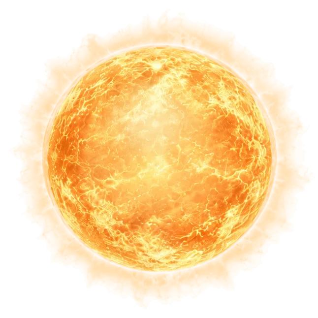
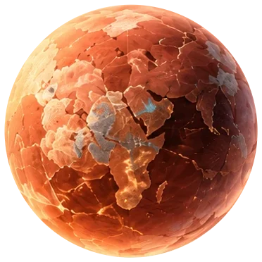
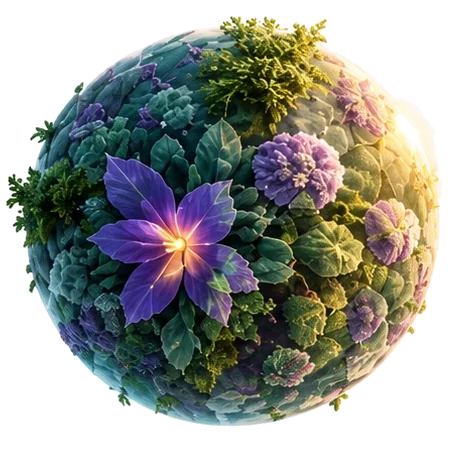
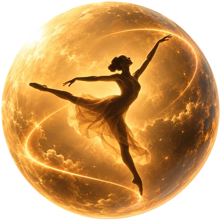

Ivo Lopes
Different orbits, same universe.

QA
Software quality, tested with care.

ART
Handmade ceramics in clay and time.

MOSS
Music for inner worlds.

STAGE
Soon
Movement, presence and storytelling.